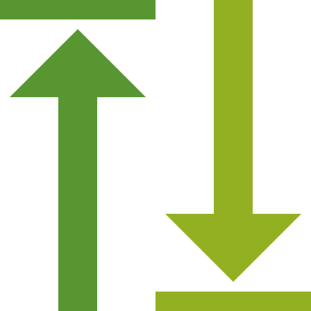
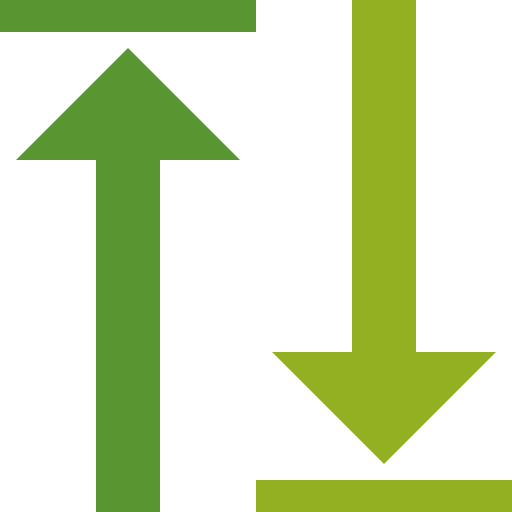

Københavns Universitet
Institut for Tværkulturelle og Regionale Studier
 

The Continuum: open source GIS tools for paperless field survey
"Paperless" field documentation has been on the digital archaeologist’s agenda for over twenty years. A range of approaches have been proposed, from the straightforward application of off-the-shelf software (e.g. Filemaker, GeoODK), to full archaeological information systems (e.g. ARK, FAIMS). Despite this, we have yet to converge on a standard toolset. There appears to be a central tension between generic software, which tends to be easy to use but may lack flexibility, and systems specifically designed for archaeologists, which are full-featured but can be difficult to deploy. In this poster I outline "yet another" system for paperless recording in archaeological survey, but one which occupies a middle ground between these two approaches. It consists of a stack of open source GIS software: PostGIS, QGIS, and the newly-available mobile app QField. Running on Android devices in the field, QField natively supports the core components of survey documentation: navigation, geolocation, custom forms, photography, and planning. It seamlessly integrates with QGIS, already widely used by archaeologists, for data processing out of the field. PostGIS is used for a central database for collaboration and dissemination via webGIS. The advantage of this system is that it is flexible enough to support a full archaeological workflow, but uses easily-deployed tools that are actively maintained by a wider community of GIS developers. There are caveats, particularly in the reliance on QField, which is still in beta, but it is hoped that this approach will contribute to the eventual standardisation of digital documentation in the field archaeology.
PostGIS
Remote database
postgis.net
PostGIS is an extension for PostgreSQL that adds support for geometries, spatial indexing, and topology.
- Authoritative, centralised database
- Wide support from desktop GIS, database and statistics software
- One platform for multiple projects and spatial/nonspatial data
- Basis for web mapping; for collaboration or dissemination
QGIS
Basecamp GIS
qgis.org
QGIS is versatile, open source GIS software that is already widely used by archaeologists.
- Synchronise field data with remote database (via geopackage)
- Data cleaning and post-processing
- Powerful form-builder
- Manage basemaps and layer symbology for QField
QField
Mobile GIS
qfield.org
QField is a free and open source Android mobile GIS app based on QGIS.
- Single app for field recording
- Coordinates and planning (using internal or external GNSS receiver)
- Site record with forms
- Photographs using in-built camera
- Navigation with custom basemaps